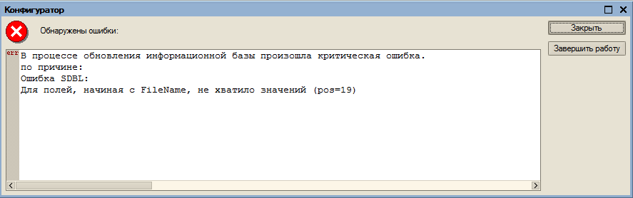

В процессе обновления информационной базы произошла критическая ошибка.
по причине:
Ошибка SDBL:
Для полей, начиная с FileName, не хватило значений (pos=19)

1) Попробовать обновить с другого компа (помогло)
2) Выполнить (непроверял):
TRUNCATE TABLE _ConfigChangeRec
TRUNCATE TABLE _ConfigChangeRec_ExtProps
В 8.2 Имена таблиц немного другие
3)Открыть таблицы на просмотр в SQL MS, возможно после этого обновится.